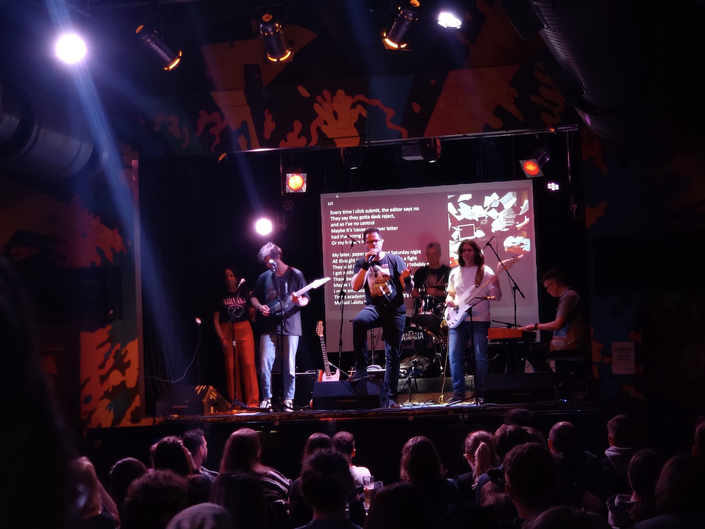

Prof Rafael de Andrade Moral
I am currently a Professor of Statistics at Maynooth University. I hold a BSc in Biology and an MSc and PhD in Statistics from the University of São Paulo, Brazil.
The photo above was taken on my wedding day. I like it because (1) it was a fantastic and unforgettable day, and (2) it is one of the few headshots I have where I actually look reasonably ok.
Read a bit about my career in this article from the Irish Times.
You can download my CV here.
Research
My research interests include the development and application of statistical modelling techniques to Ecology, Wildlife Management, and Agriculture. I am also interested in the computational implementation of statistical models, especially as R code. See the Research page for more.
I have founded, in 2021, the Theoretical and Statistical Ecology Research Group. The objective of the group is to bring together a community of researchers who use mathematical and statistical tools to better understand the natural world.
Musical Statistics
I am very passionate about Statistics Education and Maths/Stats outreach. I have been creating parodies of known songs to teach statistics, and have produced music videos for them.
You can watch the 10-song suite titled the Summary Song Saga here.
See the Stats Ed page for more.
Hobbies

In my spare time, I enjoy watching, learning and performing magic tricks, and writing, recording and playing music.
I have recently recorded an album titled ‘Arctic Fox’. It’s available on Spotify, click here if you want to have a listen.

Last, but not least, I thoroughly enjoy playing with my dogs and my daughters! (Yes, I used to have 2 dogs, 2 rabbits and a goldfish. We have recently rehomed our rabbits, and… I accidentally overfed the goldfish…).
Contact
Department of Mathematics and Statistics
Maynooth University
Maynooth, Co. Kildare
Ireland